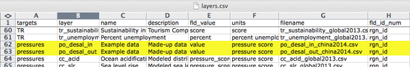
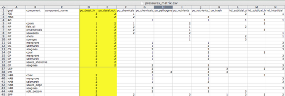
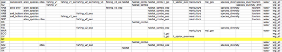
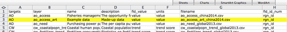
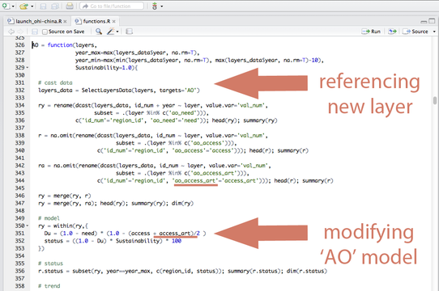
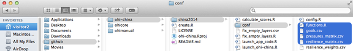
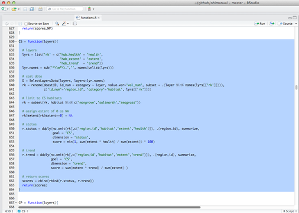
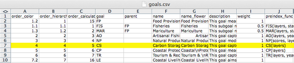
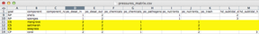
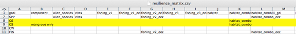

Introduction
Summary:
This guide provides an overview of conducting an OHI+ assessment. An assessment involves incorporating information from your study area into goal models to calculate Ocean Health Index (OHI) scores using the OHI Toolbox software and WebApp. This process is explained in this guide.
The OHI framework allows you to synthesize the information and priorities relevant to your local context and produce comparable scores. Because the methods of the framework are repeatable, transparent, quantitative, and goal-driven, the process of a carrying out an OHI+ assessment is as valuable as the final results.
The first completed assessment for a study area is valuable because it establishes a baseline and highlights the state of information quality and availability in an area. Any subsequent assessments carried out through time are also valuable because they can be used to track and monitor changes in ocean health. Your assessment will require careful thought and consideration along the way, and we encourage documentation and scripting to be done within the OHI Toolbox to facilitate collaboration and transparency, as well as the reproducibility for future assessments.
Each OHI+ assessment should have a clear purpose. One of the typical reasons for conducting an independent assessment is to inform policy and management decisions. Assessments can be more relevant to management when they are conducted at the spatial scales at which policy decisions are made, such as states, provinces, or counties. The regions and the overall study area are definitions that will be used throughout the assessment. The study area is the entire spatial boundary of your assessment, while the regions are the smaller subdivisions within the study area. In the OHI framework, goal scores are calculated for regions separately and then combined to produce an overall OHI score for each study area. The number of regions varies with each assessment’s study area; completed assessments have had between one and 221 regions.
The process of conducting an OHI+ assessment is as valuable as the final results. Documenting decisions made, as well as the challenges and successes encountered along the way, can lead to better understanding of the system, help inform management decisions, and guide future assessments to track changes through time.
What to expect when conducting an assessment
It is important to include information that best represents your study area, and to make science-driven decisions and clearly document what was done and why. Your team should as creative and insightful as you can be while working within the bounds of informational and technical limitations.
There are key processes and considerations that will be a part of every assessment. Every assessment should build from the lessons learned of previously completed assessments and identify what local characteristics need to be included in a study. This is done partly by comparing the local situation to situations in previous assessments; it is also done by comparing the default information provided in the WebApp to what is known about local realities. After you have outlined and identified local characteristics and priorities, you should prepare to use the Toolbox software and fit the data you have found to be formatted correctly for that software. Finally, once working with the information within the Toolbox, your team will udpate and improve the methods of the assessment before being able to calculate the final results. You will also visualize the outputs in the WebApp’s maps and flower plots that can be shared with other partners and collaborators. Above all, you should be prepared to know that this process takes time and is iterative, meaning that you often return to previous steps.
How long does an assessment take? Past assessments have taken between two and three years, with the time varying depending the size and composition of the team, the challenges encountered in discovering and gathering information, and how many models are redeveloped. The amount of data processing and goal model development needed before you will be able to use the Toolbox also affects the amount of time it takes to conduct the assessment. The skill sets of the team members and the amount of technical resources available are also hugely important factors. You should think about which team members are needed at what stage of the process, including an R programmer and a spatial analyst. It will take time for the technical team to become familiar with the OHI Toolbox and GitHub.
Overview of best practices for OHI assessments
Conducting an assessment requires both an understanding of how past assessments have been completed and the innovation to capture important characteristics of your study area using the information available. You can start by understanding the structure of completed assessments at global and smaller scales and the models that were created. Understanding the approaches in different contexts will help you think about what should be done similarly and differently in your local context.
Navigating through the WebApp can help frame your thinking and introduce you to the structure of inputs that will be required for the OHI Toolbox software.
Understand completed OHI assessments
It is important to understand methods used in completed OHI assessments so that you can identify if previous approaches are appropriate for your assessment or whether you need to redevelop the methods for your study area. In many cases, studying completed OHI assessments will inform your approaches for discovering data and developing goal models later on in the process.
The OHI framework was developed through collaboration and iteration. Your assessment can leverage the collective knowledge and insight used in the methods of the global assessment by Halpern et al. in Nature (2012) as well as the subsequent assessments conducted annually (in 2013, 2014, and ongoing). Each annual global assessment has improved upon some of the goal models based on better data availability or a better understanding of the systems involved. Several smaller-scale assessments have been completed that are highly informative as well, and particularly for regional scale assessments. The following studies have been published with supplemental online materials, and are available at http://ohi-science.org:
- Global
- Halpern et al. (2012) An index to assess the health and benefits of the global ocean. Nature.
- Halpern et al. (2015) Patterns and emerging trends in global ocean health. PLoS ONE.
- Brazil
- Elfes et al. (2014) A regional-scale Ocean Health Index for Brazil. PLoS ONE.
- United States West Coast
- Halpern et al. (2014) Assessing the health of the U.S. West Coast with a regional-scale application of the Ocean Health Index. PLoS ONE.
- Fiji
- Selig et al. (2015) Measuring indicators of ocean health for an island nation: The Ocean Health Index for Fiji. Ecosystem Services
Additionally, several OHI+ assessments have been completed. As information is available about those assessments they will be posted on http://ohi-science.org.
TIP: The OHI+ development team is prepared to provide guidance for assessments.
Strategically define spatial boundaries at the finest possible scale
Identifying the spatial boundaries of the regions within the assessment area is extremely important because OHI scores are calculated for each unique region. Spatial boundaries should be defined with geographic information system (GIS) mapping software at the smallest scale possible, ideally within one management jurisdiction. This is optimal because it is often at these scales where management and policy decisions are made, cultural priorities and management targets are identified, and information is collected in standardized and therefore comparable ways.
Maintain core values and characteristics within the assessment framework regardless of limited information quality
The models you develop and reference points you set must reflect the philosophy of the OHI framework while accommodating the attributes and shortcomings of the data. While goal status models developed in completed assessments offer good examples of approaches in different contexts, they should be considered as guides and should not limit exploration into new model development. It will likely be an iterative process to incorporate the best available information into a model that captures the philosophy of the goals. It will also require creative thinking and problem-solving abilities among your team, and documenting the decisions you make is important for transparency, communication and repeatability.
Carefully document and share all decisions in writing and computational code
It is important to plan for future assessments, as repeated assessments enable you to compare and track how scores have changed over time, with the aim of ultimately informing policy to improve ocean health. Repeated assessments will use the same methods and reference points, but incorporating updated data.
Detailed information about how the assessment is conducted will enhance its credibility and reproducibility. Decisions of why information was included and why models were developed in a certain manner are of great importance so that future assessments can incorporate the same logic and understanding of the system — or make improvements. Further, the type of workflow developed and software used to organize and process information will greatly affect the efficiency, transparency, and reproducibility of subsequent assessments. Providing public access to all such information, as well as input data and computational code is becoming the standard for scientific inquiry, so every effort should be made to achieve those aims.
Outcomes of conducting an assessment
The process of conducting an OHI assessment can be as valuable as the final results. This is because while conducting an OHI assessment you will bring together meaningful ocean health information from many disciplines. In doing so, you will have a census of existing information and will also identify knowledge and data gaps. Further, conducting an OHI+ assessment can engage many different groups, including research institutions, government agencies, policy groups, non-governmental organizations, and both the civil and private sectors.
Your completed assessment will produce OHI scores for each goal for every region in your study area, and scores within the assessment can be compared with each other. These scores will not be quantitatively comparable to those of other OHI assessments because they differ in the underlying inputs, goal models, and reference points. The only quantitative comparisons can be made within an assessment’s study area, whether between regions or through time. However, qualitative comparisons between different OHI assessments can be made because the scores are an indication of how far a region is to achieving its own targets. For instance, if two study areas have scores of seventy and sixty-five, it should be interpreted that the first study area is closer to its management targets than the second is, but since these management targets are different (in addition to the underlying data and models), they cannot be quantitatively compared.
Overview of the OHI WebApp
Section Summary:
Your team should be familiar with the structure of the WebApp since it demonstrates how information is organized and displayed. As you update inputs with local information, you can view these updates with the WebApp.
OHI+ WebApps are websites created to facilitate independent assessments. The WebApp is a good starting point when conducting an assessment because you can easily navigate how information is organized and displayed. The WebApp is also meant to be used to visualize and communicate results.
The WebApp displays input information (data and indicators) as well as final OHI scores. When prepared and formatted for the OHI, inputs are called layers and are used in all OHI calculations, including goal models, pressures and resilience. By default, the WebApp only displays layers and score information that have been extracted from the latest global assessment and allocated to subcountry regions with the study area. The default display therefore does not provide fine resolution nor does it guarantee accurate data for each study area. You will substitute these layers with higher-quality information at the local scale in your assessment. However, the default layers can be used as inputs into your assessment in cases where no better information exists. Incorporating the best information possible will generate results that best represent your study area.
The WebApp is powered by the OHI Toolbox, which organizes all of the layers and calculates Index scores. The Toolbox is where you will actively work to prepare and format layers and develop goal models, which can then be displayed with the WebApp.
A default WebApp is available for most coastal nations. For example, Ecuador’s WebApp (ECU) is found at http://ohi-science.org/ecu. Note that it is possible to translate the page into your language of choice.
Remember that this information is publicly available when stored on free GitHub accounts. If you would like your assessment to be private, you can choose a premium option.
The WebApp homepage provides tabs for you to explore your data, regions, and calculated scores. The main pages are App, Regions, Layers, Goals, and Scores, which were described in the Conceptual Guide. The App page is described more below.
The interactive App page allows you to explore input and output variables. The inputs are the layers and the outputs are calculated scores for each goal and dimension of the Index for each region in the study area. This page is where you should start your exploration. By choosing input layers you can see the range of values for a given variable and you can also see information about data sources. More detailed information about the default goal models and the calculation methods is found in the other pages of the WebApp.
The information displayed on the website is stored online in a GitHub repository. GitHub is an open-source development platform that allows multiple users to collaborate, track changes, and share their work to prepare data files and write code. Some members of your team will use GitHub to track layer preparation and view the history of changes made in this process. It also a a way for your team to document the decisions made during your assessment. Any changes made to files contained within the GitHub repository will be automatically displayed on the WebApp for other team members and collaborators to view. The history of these changes is also stored on this platform as an archive, and it can be used to display changes made over time (See the section on GitHub for how to modify files using this platform).
Defining and displaying regions
WebApps display subcountry regions within each study area. The boundaries for these subcountry regions are usually states, provinces, or districts reported to Global Administrative Areas (GADM: www.gadm.org). These land-based regions are extended offshore to divide the Exclusive Economic Zones (EEZs) into offshore regions of the study area. Offshore regions are important for Index calculations, in part because scores for each region are combined using the offshore area to weight the average of the final Index score. You can redefine these regional boundaries; these subcountry regions have been provided as a starting point. To redefine the boundaries you will need a spatial analyst; details are below.
It is important to note that the provided WebApps do not claim to take a stance on disputed territories. The boundaries for all EEZs were identified by MarineRegions.org (http://www.marineregions.org), and subcountry regions were identified by the Global Administrative Regions database (http://gadm.org).
Exploring inputs and outputs with the WebApp’s App page
The App page allows you to explore the input layers and calculated output scores for each region in the study area. The page presents data and scores from the global assessment that are applied to each subcountry region in the study area by default. In order to explore data and scores, you can select them on the left to view their attributes and you can also visualize them in a number of ways on this page.
The App page allows you to view displays through the Data and Compare tabs. The Data tab provides summary information on each layer and metadata descriptions that accompany them. The Compare tab is mainly used for comparing output scores when modifications are made to the underlying data or models.
The App’s Data tab
Overview of display options
The Data tab displays input layer or calculated scores for each goal parameter. It presents the information through a Map, Histogram, or Table. These options are available as sub-tabs on the Data tab page. The Map sub-tab is the default display option for the Data tab, and all data presented are drawn from the global assessments by default. This means they are either directly duplicated across regions, or the raw values are down-scaled using offshore area- or population-weightings. The Histogram sub-tab likewise draws from the same data source, but it displays a histogram of observed values with a smoothed line added. The Table sub-tab also draws from the same data but offers information in a table.
Data displayed in the Map sub-tab:
The Map displays data for every region. A legend is displayed in the lower right-hand corner of the map to explain the meaning of the colors presented. The range of values will change when variables are selected, and the colors will automatically change to match that range.
Data displayed in the Histogram sub-tab:
The Histogram shows the distribution of values of the selected variable as the number of observations for each value bin (shown as white bars) and it also automatically creates a smoothed density function (shown as pink shading).
Data displayed in the Table sub-tab:
The Table displays the variable’s value for each region in the study area. It provides an identifying code (rgn_id), name (rgn_name), and value (value) for each observation. The variables are also searchable since you can use the textbox at the bottom of the page to filter the results displayed.
Overview of variable options
When you choose the variables to be displayed, you will also see summary descriptions for the layer. These descriptions, statistics, and metadata for the chosen fields are displayed below the drop-down menus on the left side of the page.
TIP: As you prepare new layers, your updated descriptions will appear here.
The first selection you should make from the drop-down menus is the variable type. This means you can choose either Input Layer or Output Score. The Input Layer will show the layer used for a particular target you select. The targets in this case are either goals, pressures, resilience, or spatial information. The Output Score will show calculated scores for the alternative target selections you will make. In this case, the targets are Index or goal scores. In either case, you then have the option to further refine your search by either going into a specific layer or a specific dimension that is used in the overall Index calculations. If you do not make a selection, the Output Score is displayed by default.
For example, if you select Output Score as the variable type, you will then be able to choose a target goal or sub-goal, and then you will be able to choose the OHI dimension to be displayed. Remember that the dimensions are status, trend, pressures, resilience, future state, and score. In this way you can investigate the components that combine to create the goal scores.
As another example, if you select Input Layer as the variable type, you will be able to choose a target such as a goal and a specific layer associated with that goal. If that input layer has multiple categories of input types, or if it has multiple years of information available, you will be able to select more specific information. If you do not make a selection, the default setting is the first alphabetical category and the most recent year available.
The App’s Compare tab
The Compare tab allows you to compare differences in calculated scores based on changes you have made to the underlying layers. These changes can be the values of the layers themselves, or they can be from changing the goal models. Any component you change is tracked through the archiving system of GitHub (See the section on GitHub) and each version of the changes be visualized here. You can take advantage of this ability to compare one saved version of your calculated Index output to another version of your calculated output. This is done to compare the how changes made to your data or indicators for goals, pressures, or resilience would affect the resulting scores.
You can use this in two ways. One way is use this is to visualize updates as you make them: viewing differences is extremely helpful for error checking and for sharing tests to the data among your technical team. Another way to use the Compare tab is to compare different management scenario to how changes in your assumptions would impact score results. These changes could occur in the goal models themselves, such as through changes to targets or reference points, or they could be changes made to the values of pressures and resilience layers, for example.
The App page also offers the ability to view different branches or scenarios in the upper left-hand corner of the page. The branches refer to unique copies of a GitHub repository where information is stored. Each branch is a copy of a repository that is meant to be modified independently of other branches. This is done to ensure that changes made to one branch will not affect the information in another branch. This allows for active collaboration and offers a way to archive different outputs to Index calculations. For example, the published branch shows information that has been vetted for sharing, while the draft branch can be used for experimentation. These branches can be merged together at any time, and that is typically done when important milestones in the assessment process are reached. The subcountry folders displayed also offer another way to compartmentalize outcomes by allowing you to compare different scenarios within the same branch of your repository.
The App displays a published branch by default. It is recommended work on the draft branch until your assessment is finalized. When it is finalized, you can then merge the draft branch with the published branch.
These options for displaying and comparing information will be useful for understanding the multiple objectives in your OHI+ assessment.
Using the Toolbox
Section Summary:
In this section, you will learn about the most common modifications made to repositories. You will be given examples to follow to help with your own assessment. The most common modifications are changing the pressures and resilience matrices, changing or creating data layers, and changing or removing goals models.
TIP: You should have access to your assessment repository and be familiar with the files in the folder.
As your team finalizes which data should be included in the assessment and begins developing goal models, you can incorporate this information into your repository. Input information must be properly formatted into layers, which are registered with the Toolbox for use. Layers for the Toolbox can be prepared with any software that handles .csv files, but goal models must be updated in R. It is recommended that layer preparation occurs within your repository’s prep folder as much as possible, as it will also be archived by GitHub. Calculations can be done locally and offline by running subcountry2014/calculate_scores.R.
Layer preparation workflow
It is recommended that you construct a useful workflow with your team to incorporate local information into the Toolbox. Adding layers to the Toolbox will require working with GitHub and the Toolbox file system structure. The overall process involves preparing the layers (which can be done in the prep folder), saving them in the layers folder, and registering the layers. The layer preparation process can occur in tandem with the model modification process.
Modifying and creating data layers
Data layers are .csv files and are located in the [assessment]/subcountry2014/layers folder. Remember that all data layers provided in your repository are extracted from the global 2014 assessment.
- Layers with the suffix
_gl2014.csv (gl for global) have been exactly copied from the global assessment and applied equally to each region, and therefore the values will be the same across all subcountry regions. - Layers with the suffix
_sc2014.csv (sc for subcountry) have been spatially-extracted from global data or adjusted with spatially-extracted data so that each region in your assessment has a unique value. For example, gross domestic product (GDP) used in the global assessment was reported at the national (most often country) level. Instead of being applied equally across all subcountry regions (which would incorrectly increase the nation’s GDP several times), national GDP was down-weighted by the proportion of coastal population in each region compared with the total coastal population.
Both types of default data layers are of coarse-resolution and should be replaced with local, high-resolution data when possible. The priority should be to replace as much of the _gl2014.csv data as possible.
There are several steps to follow when working with data layers:
- Modify or create data layer with proper formatting
- Save the layer in the
layers folder - Register the layer in
layers.csv - Check (and update when appropriate)
pressures_matrix.csv and resilience_matrix.csv (located in: [assessment]/subcountry2014/conf)
Save data layers in the layers folder
When you modify existing or create new data layers, we recommend saving this as a new .csv file with a suffix identifying your assessment (example: _sc2014.csv). Modifying the layer name provides an easy way to track which data layers have been updated regionally, and which rely on global data. Then, the original layers (_gl2014.csv and _sc2014.csv) can be deleted.
* Note: filenames should not have any spaces: use an underscore (‘_’) instead. This will reduce problems when R reads the files.
Register data layers in layers.csv
When there are new filenames associated with each layer, they will need to be registered in [assessment]/subcountry2014/layers.csv. If a layer simply has a new filename, only the filename column needs to be updated:
TIP: This part is done manually. If you prefer not to manipulate your file by hand, you can generate a script that automates this.
However, if a new layer has been added (for example when a new goal model is developed), you will need to add a new row in the registry for the new data layer and fill in the first eight columns (columns A-H). It is important to check that you have filled you the fields correctly, for instance, if “fld_value” does not match the header of the source data layer, you will see an error message when you try to calculate scores. Other columns are generated later by the Toolbox as it confirms data formatting and content:
- targets: Add the goal/dimension that the new data layer relates to. Goals are indicated with two-letter codes and sub-goals are indicated with three-letter codes, with pressures, resilience, and spatial layers indicated separately.
- layer: Add an identifying name for the new data layer, which will be used in R scripts like
functions.R and .csv files like pressures_matrix.csv and resilience_matrix.csv. - name: Add a longer title for the data layer–this will be displayed on your WebApp.
- description: Add a longer description of the new data layer–this will be displayed on your WebApp.
- fld_value: Add the appropriate units for the new data layer (which will be referenced in subsequent calculations).
- units: Add a description about the units chosen in the fld_value column above.
- filename: Add a filename for the new data layer that matches the name of the .csv file that was created previously in the
layers folder. - fld_id_num: Area designation that applies to the newly created data layer, such as: rgn_id and fao_id.
TIP: Think about what units you would like to be displayed on the WebApp when filling out “units.”
Check pressures and resilience matrices
If the new or modified layer is a pressures layer, check that pressures_matrix.csv and resilience_matrix.csv have been properly modified to register the new data layers.
Modifying pressures matrices
Your team will identify if any pressures layers should be added to the pressures matrices, and if so, which goals the pressure affects and what weight they should have. You can transfer this information in pressures_matrix.csv (located in the [assessment]/subcountry2014/conf folder). It is important to note that the matrix identifies the pressures relevant to each goal, and which weight will be applied in the calculation. Each pressure is a data layer, located in the subcountry2014/layers folder. This means that pressure layers need information for each region in the study area, and some layers will need to be updated with local data. In modifying pressures, you will need to consider whether data layers can be updated or added, and whether data layers map onto goals appropriately in the local context.
Adding a new pressure to the pressures matrix requires the following steps:
- Create new pressure layer(s) and save in the
layers folder - Register pressure layer(s) in
layers.csv - Register pressure layer(s) in
pressures_matrix.csv
- Set the pressure category
- Identify the goals affected and set the weighting
- Modify the resilience matrix (if necessary)
The following is an example of adding two new pressures layers.
Create the new pressure layers and save in the layers folder
If you create a new data layer, give it a short but descriptive name that also includes a prefix that signifies the pressure category (for example: po_ for the pollution category). There are five physical categories and one social category:
- po_ = pollution
- hd_ = habitat destruction
- fp_ = fishing pressure
- sp_ = species pollution
- cc_ = climate change
- ss_ = social pressure
So for example, po_trash is a pollution layer with trash on beaches, and sp_alien is species pollution due to alien (invasive) species.
In the current example, the two new layers created to account for the input and output effects of desalination operations will be called po_desal_in, and po_desal_out.
These new layers will have scores from 0 to 1, with values for each region in your study area, and will be saved in the layers folder.
Register the new pressure layers in layers.csv
Add two new rows in layers.csv, and register the new pressure layers by filling out the first eight columns for po_desal_in, and po_desal_out.

Register the new layers in pressure_matrix.csv
pressures_matrix.csv identifies the different types of ocean pressures (columns) with the goals that they affect (rows). Adding a new pressures layer to pressures_matrix.csv requires adding a new column with the pressure layer name.
Set the pressure category
This step requires transferring previous decisions made by your team into pressures_matrix.csv. Each pressure category is calculated separately before being combined with the others, so it is important to register the new pressure with the appropriate category prefix decided by your regional assessment team.
Identify the goals affected and set the weighting
This step also requires transferring prior decisions into pressures_matrix.csv. Mark which goals are affected by this new pressure, and then set the weighting. Pressures weighting by goal should be based on scientific literature and expert opinion (3 = highly influential pressure, 2 = moderately influential pressure, 1 = not very influential pressure). Remember that the rankings in the pressures matrix are separate from the actual data within the pressures data layers. The rankings ensure that within a particular goal (e.g. within a row of the pressures matrix), the stressors that more strongly influence the goal’s delivery have a larger contribution to that goal’s overall pressure score. Therefore, the rankings are assigned independently of the actual pressure scores, and only determine their importance within the calculations.

Modify the resilience matrix (if necessary)
Resilience is included in OHI as the sum of the ecological factors and social initiatives (policies, laws, etc.) that can positively affect goal scores by reducing or eliminating pressures. The addition of new pressure layers may therefore warrant the addition of new resilience layers that were not previously relevant. Similarly, the removal of pressure layers may warrant the removal of now irrelevant resilience layers.
Modifying resilience matrices
Previous decisions made with your team will identify if any resilience layers should be added to the resilience matrices, and if so, which goals and/or pressures the resilience affects and what weight they should have. You can then transfer this information into resilience_matrix.csv (located in the [assessment]/subcountry2014/conf folder).
resilience_matrix.csv maps the different types of resilience (columns) with the goals that they affect (rows). New resilience layers may be added to resilience_matrix.csv based on finer-scale local information either in response to a new pressures layer, or as a new independent measure. Any added layer must be associated with a pressures layer that has a weight of 2 or 3 in the OHI framework so that resilience measures can mitigate pressures in each region.
Each goal must have a resilience measure associated with it. In the figure below, the Toolbox would give an error because there are no resilience layers indicated for the natural products (NP) goal.

Modifying goal models
When an existing layer is updated with new data, the Toolbox will automatically incorporate it into the goal calculations after the updated filenames are registered in layers.csv. However, if a new layer has been added to the layers folder and registered in layers.csv, the Toolbox will not use it unless it is called in a goal model. To integrate any new data layers registered in layers.csv you will need to modify the goal model to incorporate the data. Furthermore, in many cases, it will make sense to modify goal models based on data availability and/or local context. For example, the models for regional analyses can often be simplified because of improved data.
There are some key steps to follow when working with goal models:
- Update
functions.R - Check and possibly update
goals.csv - Check if you need to update
pressures_matrix.csv and resilience_matrix.csv when you change a goal model.
Update functions.R
To incorporate a new data layer into a goal model, open functions.R in RStudio: this script contains all the models for each goal and sub-goal. A member of your team with the ability to write R code will need to translate the updated goal model into the Toolbox format. Follow the structure of existing goal models in order to incorporate the new data layers, noting the use of certain R packages for data manipulation.
The image below shows the navigation pane in RStudio that can be used to easily navigate between goal models.
Check and possibly update goals.csv
goals.csv provides input information for functions.R, particularly about goal weighting and function calls. It also includes descriptions about goals and sub-goals, which is presented on the WebApp.
Changing goal weights will be done here by editing the value in the weight column. Weights do not need to be 0-1 or add up to 10; weights will be scaled as a proportion of the number of goals assessed. goals.csv also indicates the arguments passed to functions.R. These are indicated by two columns: preindex_function (functions for all goals that do not have sub-goals, and functions for all sub-goals) and postindex_function (functions for goals with sub-goals).
When updating layers or goal models, it is important to ensure that information called from goals.csv is correct:
TIP: In the ‘preindex_function’ column, you should see what the year_max, status_year, and trend_year say.
Example modification:
Suppose your team has decided to add an ‘artisanal access’ component to the Artisanal Fishing Opportunity goal because of locally available data. Once the data are obtained and properly formatted, the data layer is saved as ao_access_art. To include this new information in the goal model, you will need to do the following:
- register the layer in
layers.csv - update the goal model in
functions.R - update the goal call in
goals.csv
Step 1. Register in layers.csv

Step 2. Update the goal model

Step 3. Update goal call in goals.csv
Removing goals
If a goal is not relevant in your region, it is possible to remove the goal completely from the calculation. There are four places where you will need to remove the reference to this goal. Failing to delete all referenced layers after the goal is deleted will result in errors. To remove goals from your assessment, you will have to do the following:
- Remove the goal model from
functions.R - Remove the goal’s row from
goals.csv - Remove the goal’s row from
pressures_matrix.csv - Remove the goal’s row from
resilience_matrix.csv

Example: Removing carbon storage (CS) goal
To completely remove the carbon storage goal from Index calculations, you will do the following.
- Remove the carbon storage (CS) goal model from
functions.R. Delete the highlighted text in the figure below that references the CS layers and calculates CS goal status, trend, and scores.

- Remove the CS row from
goals.csv. Delete the highlighted row in the figure below that contains the CS goal.

- Remove all CS rows from
pressures_matrix.csv. Delete the highlighted rows in the figure below that contain CS pressures.

- Remove all CS rows from
resilience_matrix.csv. Delete the highlighted rows in the figure below that contain CS resilience.

Modifying the pressures matrix for goals with categories
Background
The pressures and resilience matrix tables identify which pressures and resilience measures (layers) are relevant to which goals and how they are weighted. But pressures and resilience measures can also affect the components within a goal differently. When that is the case, those components can have individual entries (rows) in the pressures and resilience matrix tables and will have pressures and resilience scores calculated individually for each component.
The Toolbox calls these components of a goal ‘categories’, and knows to calculate pressures and resilience for category elements separately because they are identified in three places: in pressures_matrix.csv, resilience_matrix.csv, and config.r. These files are all located in the conf folder. To calculate the pressures and resilience scores, the Toolbox uses config.r to identify which categories to expect in the matrix tables, and will give a warning if they do not match. config.r relies upon the data layers identified in the pressures_components and resilience_components variables.
In global assessments, there are several goals that have categories indicated in the matrix tables and config.r file:
| NP | product types | np_harvest_product_weight |
| CS | habitat types | cs_habitat_extent |
| CP | habitat types | cp_habitat_extent_rank |
| HAB | habitat types | hab_presence |
| LIV | industry sectors | le_sector_weight |
| ECO | industry sectors | le_sector_weight |
If you have modified any of the category types in the matrix tables of the above goals, or added new category types to any goals, you will likely need to update the layer indicated in config.r. It is also possible to identify individual categories in other goals than those listed above. For example, in the mariculture sub-goal, you could specify the pressures on nearshore mariculture separately from offshore mariculture.
It is important that the file identified in config.r does not contain any NA values.
Example 1: Pressures
Here is an example of how to modify existing category types for the natural products goal.
In the China OHI+ assessment there are three natural product types (seasalt, sea chemicals, and sea medicine), which differ from those assessed in the global assessments (corals, fish_oil, ornamentals, seaweeds, sponges). After modifying and registering the appropriate data layers and updating the NP function in functions.r, it is time to update the natural product types in pressures_matrix.csv, resilience_matrix.csv, and config.r.
- to update
pressures_matrix.csv and resilience_matrix.csv, make sure that each product type has a separate row, with the appropriate pressures identified and weights attributed. - to update
config.r, check that the data layer identified in the pressures_components and resilience_components has the same category types.
When you run calculate_scores.r, the following warning will alert you that there is a mis-match between category types identified in the matrix and config.r:
Calculating Pressures... The following components for NP are not in the aggregation layer np_harvest_product_weight categories (corals, fish_oil, ornamentals, seaweeds, sponges): seasalt, sea_chemicals, sea_medicine
This message indicates that the np_harvest_product_weight layer identifies five categories (corals, fish_oil, ornamentals, seaweeds, sponges) but the pressures_matrix.csv indicates three (seasalt, sea_chemicals, sea_medicine).
To ensure that pressures are calculated correctly for the categories in your assessment, you will need to change the layer identified in config.r.
Note that more subtle examples of these mismatch between the categories identified in pressures_matrix.csv and config.r can also occur. For example, after updating the carbon storage layers and goal model in the China OHI+ assessment, the following warning message appeared when running calculate_scores.r:
Calculating Pressures... The following components for CS are not in the aggregation layer cs_extent categories (saltmarshes, seagrasses, mangroves): mangrove, saltmarsh, seagrass
The problem here is that the categories identified in config.r (saltmarshes, seagrasses, mangroves) are plural, whereas the categories identified in the pressures matrix (mangrove, saltmarsh, seagrass) are singular, and the Toolbox needs exact matches. To fix this warning, you need to update the pressures matrix with the plural names.
Example 2: Resilience
For resilience calculations, the proper categories also need to be identified both in resilience_matrix.csv and config.r. If there is a mismatch, you will see the following message:
Calculating Resilience... Note: each goal in resilience_matrix.csv must have at least one resilience field Based on the following components for NP: corals fish_oil ornamentals seaweeds shells sponges
With resilience, if we update only the resilience_matrix.csv but not config.r, we get the following error message instead of the warning message we saw for pressures above.
Based on the following components for NP: seasalt sea_chemicals sea_medicine Error in subset.default(SelectLayersData(layers, layers = lyrs), id_num == : object 'id_num' not found In addition: Warning messages: 1: Grouping rowwise data frame strips rowwise nature 2: In left_join_impl(x, y, by$x, by$y) : joining factors with different levels, coercing to character vector
This error can be fixed by updating config.r with a layer identifying the appropriate categories.
Other example modifications
Preparing the fisheries sub-goal
Here is some background information about how to prepare fisheries data layers for the Toolbox.
Data layers used by the Toolbox:
fis_b_bmsyfis_meancatchfis_proparea_saup2rgnfp_wildcaught_weight
Description of data layers
fis_b_bmsy
- for species: B/Bmsy estimate (either from formal stock assessment, or from a data-poor method such as CMSY)
- for genus/family/broader taxa: the toolbox will use median B/Bmsy from species in that region + a penalty for not reporting at species level. In order for the code to assign the correct penalty, the taxa need to include a numerical code of 6 digits, where the first digit behaves like an ISSCAAP code (the standardized species codes used by FAO): 6 means species, 5 means genus, 4 to 1 are increasingly broad taxonomic groups
- data source (for CMSY): catch time-series (at least 10 years of catch >0), species resilience (if available)
Example data:
| 51 | Ablennes hians | 1985 | 1.112412 |
| 51 | Ablennes hians | 1986 | 1.222996 |
| 51 | Ablennes hians | 1987 | 1.371058 |
NOTE: if a species that is caught in different sub-regions belongs to the same population, you don’t want to split the catch among sub-regions, instead, you want to sum catch across all sub-regions, so you can calculate B/Bmsy for the whole population. For the global analysis we grouped all species catch by FAO major fishing area (www.fao.org/fishery/area/search/en), indicated in the column fao_id, assuming that all species caught within the same FAO area belonged to the same stock, while we assumed that the same species, if caught in a different fishing area, belonged to a separate stock.
Use fao_id as an identifier that separates different fisheries ‘stocks’ belonging to the same species. If you don’t have multiple stocks in your study area, set all fao_id = 1.
fis_meancatch:
- average catch across all years, per species, per region
- data source: catch time-series (at least 10 years of catch >0), with a unique identifier for each population that you want to assess separately
Example data:
| 37_8 | Aristeus antennatus_690051 | 2014 | 14.24398116 |
| 37_8 | Atherinidae_400218 | 2014 | 27.30120156 |
| 37_8 | Balistes capriscus_607327 | 2014 | 3.247883895 |
The taxon_name_key column indicates the name of the species (e.g. Aristeus antennatus) and its ‘taxonkey’. The taxonkey is a 6 digit numeric code used by the Sea Around Us Project, modified from FAO codes. The important element of this code is the first digit, because it reflects the taxonomic level (6=species, 5=genus, 4=family, etc.) of the reported catch.The toolbox uses this first digit to assign a score to all catch that was not reported at species level, taking the median of the B/Bmsy of assessed species, and adding a penalty that is increasingly strong for coarser taxa.
fis_proparea_saup2rgn:
- a conversion file that, for each region for which catch is reported, tells us what proportion of that region falls within each of the final OHI reporting regions.
Example data:
| 166 | 1 | 1.0 |
| 162 | 2 | 1.0 |
| 574 | 3 | 0.7 |
| 37 | 4 | 0.8 |
Specific instances:
only if catch is reported for different regions than the ones used for the OHI assessment: this should be calculated using spatial analyses of overlap of the spatial units at which catch is reported with the spatial units at which the OHI assessment will be reported. The global data was reported by subregions (saup_id) and in some cases multiple subregions were part of the same, larger EEZ. Since for OHI we wanted results by EEZ (rgn_id), in those cases we needed to combine results from the subregions to get the final score, based on their size relative to the total EEZ size (prop_area). If catch is reported for the same areas for which OHI is calculated: then all the prop_area are = 1. If catch is reported for the whole area of the assessment, but you want to calculate a separate OHI score for different sub-regions: for each OHI reporting region (rgn_id) you’ll repeat the same region in the saup_id column, and prop_area will be =1. This effectively means all the reporting regions will get assigned 100% of the catch and will have the same final stastus and trend score for the fisheries goal (but may have different pressures and resilience scores, if those layers are different in each sub-region).
fp_wildcaught_weight:
only needed if there is mariculture: for each region, this represents the relative proportion of catch coming from wild caught fisheries versus mariculture. The layer is used to weight how much the fisheries score influences the final food provision score, the higher the fisheries catch, the more the food provision score will reflect the fisheries score, and vice-versa if mariculture has a higher catch. (NOTE that, before all mariculture harvest from all species gets summed, the mariculture harvest for each species is smoothed and then multiplied by the resilience score).
Running CMSY model
Sample data to run CMSY:
| 6 | Acanthistius brasilianus_41 | Medium | 100 | 1950 |
| 23 | Acanthurus dussumieri_61 | | 0.059250269 | 1950 |
| 24 | Acanthurus dussumieri_71 | | 0.190749971 | 1950 |
| 25 | Acanthurus lineatus_61 | Low | 12.74821966 | 1950 |
The current CMSY script produces an output that looks something like this (split into 2 tables):
| Ablennes hians_51 | SC | 30974 | 1985 | 1.112412 | 1.8 |
| Ablennes hians_51 | SC | 30974 | 1986 | 1.222996 | 1.768895 |
| Ablennes hians_51 | 1985 | 1 | 1 | 1 | 1.093932 | 1 |
| Ablennes hians_51 | 1986 | 1.014688 | 1.075699 | 1.298437 | 1.209005 | 1.160329 |
where stock_id is the unique identifier for each stock that was used in the input file, convergence indicates whether the model converged and how strongly (‘SC’ = strong convergence), effective_sample_size reports the number of iterations used, yr = year, b_bmsy = B/Bmsy for the corresponding year (based on the median of all the estimated values: reccomended), b_bmsyUpper = B/Bmsy at the upper 95% bootstrapped confidence bound, b_bmsyLower = B/Bmsy at the lower 95% bootstrapped confidence bound, b_bmsyiq25 = B/Bmsy at the first quartile, b_bmsyiq75 = B/Bmsy at the third quartile, b_bmsyGM = B/Bmsy based on the geometric mean of estimates, b_bmsyMed = B/Bmsy based on the median of estimates.
How to:
1. Include resilience in the CMSY code:
In the CMSY R script, in the PARAMETERS section, replace the following:
2. Make assumptions about fisheries regulations:
If you assume that fisheries are depleted and there isn’t very much fisheries regulation, and you are using the CMSY method to assess B/Bmsy, the original model may work well. If, however, the catch of a species declined because fisheries regulations have closed or limited the fishery, or if a fishery was abandoned for economic reasons (e.g., change in consumer prefereces, market price dynamics, etc.), the model may be too pessimistic and understimate B/Bmsy. In that case it may be best to use a version with a uniform prior on final biomass, instead of the constrained prior.
The original constrained prior on final biomass is set by this line within the code:
finalbio <- if(ct[nyr]/max(ct) > 0.5) {c(0.3,0.7)} else {c(0.01,0.4)}
The model uses a uniform prior if that line is replaced with:
finalbio <- c(0.01,0.7)
3. Use data at a different spatial resolution than the final assessment:
See notes above for fis_proparea_saup2rgn
4. Calculate B, or Bmsy:
The CMSY model calculates B/Bmsy as a ratio, it does not estimate the two variables separately.
5. Use catch per unit of effort (CPUE):
The CMSY model requires total biomass removed by fisheries, and uses catch as a proxy for that. It cannot use CPUE. Other more sophisticated stock assessment models use CPUE and may be employed. We do not provide documentation for the use of these other models.
6. Use other life-history characteristics, in addition to resilience:
The CMSY model does not use more detailed information. Other more sophisticated stock assessment models use other life-history traits such as fecundity, larval dispersal, r, K, Lmax, etc., and may be employed. We do not provide documentation for the use of these other models.
7. Create a ‘taxonkey’ to assign to each species:
When replacing the SAUP_FAO data with your own data, assign a key of 600000 to all species. For all catch that is reported at genus or coarser taxonomic level, you will have to choose an appropriate taxonkey. You can create your own key, from 100000 to 500000, based on your own judgment of how many species may be reported under that same denomination, and how different they may be (all that matters for the toolbox code is whether the number starts with a 1,2,3,4,5 or 6 with 1 being the coarsest, such as ‘miscellaneous marine animals’, or ‘crustaceans nei’).
Resources
Martell, S & Froese, R (2013) “A simple method for estimating MSY from catch and resilience”. Fish and Fisheries, DOI: 10.1111/j.1467-2979.2012.00485.x. Downloadable here
Rosenberg, A.A., Fogarty, M.J., Cooper, A.B., Dickey-Collas, M., Fulton, E.A., Gutiérrez, N.L., Hyde, K.J.W., Kleisner, K.M., Kristiansen, T., Longo, C., Minte-Vera, C., Minto, C., Mosqueira, I., Chato Osio, G., Ovando, D., Selig, E.R., Thorson, J.T. & Ye, Y. (2014) Developing new approaches to global stock status assessment and fishery production potential of the seas. FAO Fisheries and Aquaculture Circular No. 1086. Rome, FAO. 175 pp. Downloadable here
Updating the WebApp’s pages
The WebApp displays input layers on several pages: on the App page, Layers page, and Scores page. These input layers are displayed from layers.csv and the layers within the layers folder and the scores are displayed from scores.csv. While the input layers and scores will be automatically displayed on the WebApp, there is other content on WebApps pages that can be edited by your team and displayed. You will likely spend the most time updating the equations displayed on the Goals page to be consistent with the updated methods you have used in your assessment.
For the WebApp to display the pages properly, not everything on each page can be edited as it is written in a language to create the website. But it is possible to explore the files and update much of the text that is displayed while maintaining the required formatting. To do this, follow the instructions in copy_webapps_templates.r, which creates a folder called webapps_templates and copies template files there.
It is best to edit the files in RStudio: you will be able to view your work as it will be displayed on the WebApp by clicking the ‘Preview HTML’.
Regions
You may have redefined the spatial boundaries of the regions used in your assessment, or you may want to update the information provided about them. This can be done with the file called webapps_templates/regions.brew.md.
Layers
Most of the information displayed on the Layers page of the WebAppis taken from the layers.csv, and therefore to modify any information about specific data layers, you will need to modify the layers.csv file within the draft branch of your repository. However, you are able to edit the header text information at the top of the Layers page if you wish. This can be done with the file called webapps_templates/layers.brew.md.
Goals
You will likely spend the most time modifying the information displayed on the Goals page, as these show and describe the models used in the assessment. Text can be modifed with the file called webapps_templates/goals.brew.md.
To edit the goal equations themselves, you will edit the goals.Rmd found in the conf folder (example: ecu/subcountry2014/conf/goals.Rmd. This is an Rmarkdown file, with equations written in LaTex. When rendered by RStudio or the WebApp, it displays nicely formatted. To update model equations, you will need to use the LaTex format. You can learn the syntax by studying how the equations from the global assessments are displayed, and from many resources online. One resource is https://en.wikibooks.org/wiki/LaTeX/Mathematics. Learn more about .Rmd formatting at http://shiny.rstudio.com/articles/rmarkdown.html.
Scores
The scores displayed on the Scores page of the WebApp are the calculated scores from the scores.csv file in the draft branch, and therefore cannot be modified. However, you are able to edit the header text information at the top of the Scores page if you wish. This can be done with the file called webapps_templates/scores.brew.md.
R Tutorials for OHI
Ocean Health Index R code uses several packages and best practices to faciliate understanding and collaboration. These approaches are presented here, along with examples using data included in global OHI assessments.
This document describes several packages that are used extensively in OHI assessments and introduces you to typical coding practices commonly seen in OHI scripts and functions.
Also see the accompanying R script to test examples using these packages.
R Very Basics:
- Have you already downloaded and installed R?
- Have you already downloaded and installed RStudio?
- Have you walked through the excellent interactive tutorials from swirl?
tidyr functions
‘Tidy’ up your messy data using tidyr to make it easier to work with. The ‘tidy tools’ functions in the dplyr package work best with tidy data.
From Hadley Wickham’s Tidy Data paper: >It is often said that 80% of data analysis is spent on the cleaning and preparing data. And it’s not just a first step, but it must be repeated many over the course of analysis as new problems come to light or new data is collected. To get a handle on the problem, this paper focuses on a small, but important, aspect of data cleaning that I call data tidying: structuring datasets to facilitate analysis.
From RStudio’s introduction to tidyr:
The two most important properties of tidy data are: 1. Each column is a variable. 2. Each row is an observation.
Arranging your data in this way makes it easier to work with because you have a consistent way of referring to variables (as column names) and observations (as row indices). When you use tidy data and tidy tools, you spend less time worrying about how to feed the output from one function into the input of another, and more time answering your questions about the data.
gather() is arguably the most useful function in tidyr, and is explained in more detail below. spread() and separate() are other useful functions in tidyr.
Other ‘tidyr’ references: * Hadley Wickham’s Tidy Data paper: Download the pre-print version for the whys and hows of tidy data. * Cran tidy data vignette: An informal and code heavy version of Hadley’s full Tidy Data paper. * RStudio Blogs: Introducing tidyr: Basics and philosophy of tidyr * swirl tutorial package: A tutorial package built directly into R. Section 2: ‘Getting and Cleaning Data’ runs you through dplyr and tidyr basics * R data wrangling cheat sheet: A quick reference guide to tidyr and dplyr functions
tidyr::gather()
Description
gather() takes data organized in rows and collapses them into a column format (a key column and a value column), duplicating all other columns as needed. Use gather() when your data is organized in “wide” format, in which some of your variables are in row form, rather than column form. Another tidyr function, spread(), is more or less the reverse of gather(), to reformat long data into wide data. It is more difficult to work with wide data, but may be more convenient for examining data in a table format.
Note: gather() essentially replaces melt() in plyr package.
Example
The sample data set (see intro) contains harvest data of a number of marine commodities, separated by country, commodity, and year. In its original form, the harvest data (in tonnes) is spread across five different harvest years. * Counter to ‘tidy data’ principles, we have multiple columns (X2007:X2011) representing a single variable (year), and multiple observations of harvest tonnage in each row. * To transform this into ‘tidy data’ we will gather the five annual harvests into a single column called ‘tonnes’ and note the year of harvest in a new column called ‘year’.
The example in the figure below shows how the original wide data is transformed into long data using the command gather. Here are two ways of acheiving this:
- Here, information from columns X2007 through X2011 are gathered into a single column called
year, and the information in each column are put into a new column called tonnes.
data_long <- data_wide %>% gather(year, tonnes, X2007:X2011)
- Here, the
- unselects the named columns, so they will not be gathered; all other columns are gathered into columns named year and tonnes. This approach will yield the same result.
data_long <- data_wide %>% gather(year, tonnes, -Country, -Commodity, -Trade)
dplyr functions
The dplyr package includes a number of functions to easily, quickly, and intuitively wrangle your data. Here is a quick introduction with examples from data used in the Ocean Health Index.
From RStudio’s introduction to dplyr:
The bottleneck in most data analyses is the time it takes for you to figure out what to do with your data, and dplyr makes this easier by having individual functions that correspond to the most common operations…
Each function does one only thing, but does it well.
The most important dplyr functions to understand for data processing will be group_by(), mutate(), and summarize(). Also important, dplyr introduces the ability to perform subsequent functions in a logical and intuitive manner, using the %>% chain operator.
%>% (chaining operator): allows sequential chaining of functions for cleaner, easier-to-read codedplyr::select(): selects variables to be retained or dropped from datasetdplyr::filter(): filters data set by specified criteriadplyr::arrange(): sorts dataset by specified variablesdplyr::mutate(): adds variables or modifies existing variablesdplyr::summarize(): uses analysis functions (sum, mean, etc) to summarize/aggregate specified variablesdplyr::group_by(): groups data by specified variables, allowing for group-level data processing.
Other dplyr references:
%>% operator
Description
The %>% operator allows you to ‘pipe’ or ‘chain’ a number of function calls, in which the output dataframe of one function is fed directly into the next function as the input dataframe. This lets you avoid creating temporary variables to store intermediate values, and lets you avoid nesting multiple functions. Using %>% makes your code more elegant, streamlined, and easy to read since you are able to write your code on multiple indented lines. From dplyr and pipes: the basics:
OK, here’s where it gets cool. We can chain dplyr functions in succession. This lets us write data manipulation steps in the order we think of them and avoid creating temporary variables in the middle to capture the output. This works because the output from every dplyr function is a data frame and the first argument of every dplyr function is a data frame.
Usage
data_out <- f(data_in, args) # standard function call data_out <- data_in %>% f(args) # function call using %>% operator. data_in is passed as first argument # of function(). data_out <- data_in %>% f1(args1) %>% f2(args2) %>% f3(args3) %>% ... # Output of function can be passed to another function immediately, # without need for temporary storage. Indented format for legibility, # see how pretty it looks?
Example
### Bad! Nested functions: read from inside out - hard to decipher h_recent_totals1 <- arrange(mutate(filter(group_by(harvest, country, commodity), year >= 2009), harvest_tot = sum(tonnes, na.rm = TRUE)), country, commodity) ### Better: Line by line. Easier to read, but have to wait for the end to see ### what it does. Temp variables add more places for errors and bugs. h_temp <- group_by(harvest, country, commodity) h_temp <- filter(h_temp, year >= 2009) h_temp <- mutate(h_temp, harvest_tot = sum(tonnes, na.rm = TRUE)) h_recent_totals2 <- arrange(h_temp, country, commodity) ### Best! Chained format intuitively links together the functions. Saves ### typing, fewer opportunities for errors, easier to debug. The %>% operator ### automatically indents each following line for easy reading. h_recent_totals3 <- harvest %>% group_by(country, commodity) %>% filter(year >= 2009) %>% mutate(harvest_tot = sum(tonnes, na.rm = TRUE)) %>% arrange(country, commodity)
dplyr::select()
Description
select() allows you to choose specific columns/variables from your dataset, and drop all others. Alternately, you can select specific variables to drop, leaving others in place. rename() is a relative of select() that allows you to rename variables, while leaving all variables in place.
Examples
The sample dataset includes the annual harvest, in tonnes, of a number of commodities exported by two countries. Type of trade provides no information (it is all Export), so that variable can be dropped. The names of all the variables should be converted to lower-case, to match the OHI style guide. See the figure below.
### Example 1: harvest <- harvest %>% select(Country, Commodity, year, tonnes) ### Selects the named variables, and drops all others. Useful to choose a ### subset of key variables from a complicated data set. ### Example 2 (same result as example 1): harvest <- harvest %>% select(-Trade) ### Using the '-' drops 'Trade' column and leaves other variables intact. ### Useful if you would like to clear out temporary variables. harvest <- harvest %>% rename(country = Country, commodity = Commodity) ### Drops no variables. Syntax: rename(new_var_name = old_var_name) w/o quotes.
Using the chain operator, we can string these two functions into one smooth, easy-to-read flow:
harvest1 <- harvest %>% select(-Trade) %>% rename(country = Country, commodity = Commodity)
The harvest data is fed into select(), and the output is fed into rename(). The final output of this complete flow is assigned to the new variable harvest1. 
dplyr::filter()
Description
filter() allows you to select observations (rows) that match search criteria, using values in specified variables (columns). Drops all observations that do not match the criteria. * Use logical operators & and | to filter on multiple criteria simultaneously
Example
harvest_vnm <- harvest %>% filter(country == 'Vietnam') ### Single criterion filter: keeps only data with country matching 'Vietnam'. h_vnm_recent <- harvest %>% filter(country == 'Vietnam' & year >= 2009) ### filter with multiple criteria: selects 'Vietnam' data from 2009 or later.
dplyr::arrange()
Description
arrange() sorts observations (rows) based upon a specified variable or list of variables. Does not actually change the data in any way, only the appearance. Useful for inspecting your data after each processing step.
Example
harvest_sorted <- harvest %>% arrange(country, commodity, year) ### Sorts commodity harvest values for each country, chronologically harvest_sorted <- harvest %>% arrange(country, commodity, desc(year)) ### Sorts harvest values by most recent year (descending order)
dplyr::mutate()
Description
mutate() is a powerful and useful tool for processing data. You can add new variables or modify existing variables, using all variety of functions to perform operations on the dataset. mutate() works well with group_by() to perform calculations and analysis at a group level rather than dataset level.
Example
From the sample data set (see figure below), we would like to:
- Remove the ‘X’ from the ‘year’ values.
- Translate the text codes in ‘tonnes’ into numbers and NAs. These codes are specific to FAO’s data reporting format:
... is the same as NA, and 0 0 means greater than zero, but less than half a tonne. - Convert these text fields into numeric fields so they can be analyzed properly.
library(stringr) ### to access 'str_replace()' string functions harvest1 <- harvest %>% mutate( year = str_replace(year, fixed('X'), ''), # remove the 'X' tonnes = str_replace(tonnes, fixed('...'), NA), # replace '...' with 'NA' tonnes = str_replace(tonnes, fixed('0 0'), 0.1), # replace '0 0' with '0.1' tonnes = ifelse(tonnes =='', NA, tonnes)) %>% mutate( tonnes = as.numeric(as.character(tonnes)), year = as.integer(as.character(year)))
Notes: * In this example, no new variables were added. Multiple variables can be changed with one call to mutate(). Multiple modifications to ‘tonnes’ happen sequentially, so order is important. * The as.numeric(as.character(...)) gets around the fact that these text variables are stored as ‘factor’ class, rather than ‘character’ class. as.character() forces them into character class, and then the as.numeric() can convert the character strings to numeric where applicable. Similar for as.integer(...)
dplyr::summarize() ( or summarise() )
Description
summarize() combines multiple values of a variable into a single summary value. summarize() works well with group_by() - for grouped data, each group will be summarized and reported separately. For ungrouped data, the summary covers the entire dataset.
summarize() compresses the dataset and drops individual observations. To maintain individual observations, consider creating a summary variable using mutate() instead.NA values can be problematic - use na.rm=TRUE or similar methods.
Example
To determine the total harvest of each country, for each commodity:
h_summary <- harvest %>% group_by(country, commodity) %>% summarize(harvest_tot = sum(tonnes, na.rm = TRUE)) %>% ungroup()
dplyr::group_by()
Description
group_by() allows you to easily group a dataset by one or more variables/columns.
By itself, it does nothing to change your data. But once your dataset has been sorted into useful groups, other dplyr functions will operate on each group separately, rather than operating on the entire dataset. * The function groups(data) reports back the current grouping status of dataframe data.
group_by() alters the grouping, but does not alter the sort order.
arrange() does not alter the current grouping - it will sort by groups first, then sorts within each group.- Multiple calls to
group_by() will reset the groupings each time (by default), rather than adding additional layers of groups. - Once you have finished with your operation at the group level, it is a good practice to use the
ungroup() function to remove the groupings, to avoid unintended consequences due to forgotten group_by() calls.
Example
If you want to find the total tonnage harvested for each commodity for each country, you would want to group by country and by commodity, and then perform a sum() function on the grouped data. Two options presented here: summarize() to collapse data to just the summary, and mutate() to add a new column that includes the summary values.
h_tot_sum <- harvest %>% group_by(country, commodity) %>% summarize(harvest_tot = sum(tonnes, na.rm = TRUE)) ### Summarize information by collapsing each group to a single summary value ### (total tonnage by commodity by country). Note ungroup() at end. h_tot_mut <- harvest %>% group_by(country, commodity) %>% mutate(harvest_tot = sum(tonnes, na.rm = TRUE)) %>% arrange(country, commodity) %>% ungroup() ### Summarize information by creating a new variable to contain summary ### value; report value for every observation. Note ungroup() at end.
Coding style
Code unto others as you would have them code unto you.
Why style? ask Hadley Wickham, developer of many wonderful R packages:
Good style is important because while your code only has one author, it’ll usually have multiple readers. This is especially true when you’re writing code with others. In that case, it’s a good idea to agree on a common style up-front. Since no style is strictly better than another, working with others may mean that you’ll need to sacrifice some preferred aspects of your style.
The Ocean Health Index is founded upon principles of open-source science, so our code should be not just available, but legible to others. For OHI+, we expect people to modify code to implement new goal models, and we may need to provide support in developing and debugging their code.
Certain coding techniques are more efficient than others (e.g. in R, looping across elements in a vector is much slower than operating on the entire vector at once), but rarely does OHI code push any performance envelopes. Much more of our time is spent writing code, translating old code into new models, and debugging. Transparent, readable code will save more time in the future than a perfectly-optimized but opaque algorithm.
Readable code is:
- collaborative
- easier for others to understand and debug
- easier for others to update and modify
- easier for ‘future you’ to interpret what ‘past you’ meant when you wrote that chunk of code.
Check out Hadley Wickham’s style guide:
- How many of these suggestions are second-nature to you? how many are you guilty of breaking?
- Note that these are guidelines, not rules; non-stylish code can still work.
Best practices for coding in OHI assessments:
- use a consistent format for variable names, filenames, function names, etc.
lower_case_with_underscores (preferred) or camelCase (ok I suppose) - use names that are brief but intuitive
- Comment clearly for your own purposes, and for others.
- Comment on the purpose of each important block of code.
- Comment on the reasoning behind any unusual lines of code, for example an odd function call that gets around a problem.
- Take advantage of R Studio section labels functionality:
- If a comment line ends with four or more -, =, or # signs, R Studio recognizes it as a new section.
- Text within the comment becomes the section name, accessible in the drop-down menu in the bottom left of the RStudio script window.
- use <- to assign values to variables (not necessary, but preferred)
- use %>% to create intuitive chains of related functions
- one function per line
- break long function calls into separate lines (e.g. multiple mutated variables)
- use proper spacing and formatting for legibility
- don’t crowd the code - use spaces between math operators and after commas
- use indents to indicate nested or sequential/chained code
- break sequences or long function calls into separate lines logically - e.g. one function call per line
- use functions to add intuitive names to chunks of code
- Use ‘tidy data’ practices - take advantage of
tidyr, dplyr - clean up unused columns using
select(-colname)
- if you are working on an older script, spend a few extra minutes to update it according to these best practices
- technical debt - you can do it quickly or you can do it right. Time saved now may cost you or someone else more time later.
Writing functions
http://nicercode.github.io/guides/functions/ Why write functions? * name a chunk of code for easier reading * easily reuse a chunk of code
What makes a good function: * It’s short * Performs a single operation * Uses intuitive names
Directories and files
* Store files in a folder called 'github' in your home directory; access it with `~/github` so that users with different operating systems can work smoothly with your files
Frequently Asked Questions (FAQs)
This document provides answers to some frequently asked questions about conducting regional assessments using the Ocean Health Index. A few questions are related to general concepts in the Ocean Health Index, but mostly those topics are covered at http://www.oceanhealthindex.org/About/FAQ/. Here, the FAQ are primarily technical questions regarding regional assessments and using the OHI Toolbox. This document will be updated continually as we have more questions. Questions are arranged by theme, and have the format Q: (question) and A: (answer).
Overall
Conceptual
Q: Are regional assessment scores comparable with global assessment scores?
A: Regional Index scores cannot be directly compared to global Index scores, or to other regional Index scores calculated through separate efforts. This is because data and indicators (both what they measure and their quality), reference points (set using local knowledge and priorities), and specific goal models are often different for the areas being compared.
However, because scores for each goal are scaled to a reference point, qualitative comparisons can be made. For example, a score of 71 in the US West Coast compared to 66 in Brazil says that the US West coast is closer to fully meeting its sustainable goals (i.e., meeting regional reference points). Furthermore, use of the same Ocean Health Index framework across regional assessments permits fruitful discussion and general comparisons even if data inputs differ. Ocean Health Index assessments at any scale always work within a standardized definition of ocean health, using information to capture the philosophy of the ten goals that have been identified (and undergone scientific peer-review) prior to compiling relevant data. Use of the ten-goal framework is important both to ensure that all aspects of ocean health are captured and to allow better comparison across regional assessments than would be possible if the different regions used different methods.
Q: How does the Index account for ecosystem benefits?
A: The OHI is not an index of ecosystem services. The Index prefers to describe benefits from a healthy ocean and emphasize their relevance, but the ideas are closely related. The ten goals roughly fall into areas of ecosystem services such as food provisioning (Food Provision), regulatory services (Carbon Storage), cultural services (Tourism and Recreation,Special Places), supporting services (Clean Waters, Biodiversity), and other values (Livelhoods and Economies).
(Source: OHI Baltic workshop)
Q: Where is climate change measured in the Index?
A: Four different aspects of climate change – increases in sea surface temperature (SST), sea level rise (SLR), ultraviolet radiation (UV), and ocean acidification (OA) – are included as pressures to many goals in the Index, including Natural Products, Carbon Storage, Coastal Protection, Sense of Place, Livelihoods & Economies and Biodiversity. Mitigation of climate change through carbon storage is one of the ten goals.
Q: Why are food provision and artisanal fishing opportunities goals separated?
A: These goals measure different aspects of how people relate to fishing. The catch of fish made by artisanal (=small-scale, subsistence type) fisheries is captured in the food provision goal. Jobs, wages and income from both the food provision and artisanal fishing goals are captured in the livelihoods & economies goal. The purpose of the artisanal fishing opportunity goal is to evaluate the opportunity for people to pursue this fishing in relation to their need to do so.
Timing and Resources
Q: How much does it cost to produce a regional assessment?
A: Regional assessments can be completed at(varying costs depending on the local context.(Funds are needed for a management and scientific team, workshops and meetings (including travel), communications, policy engagement, and operating costs. Therefore, securing funding is an important component to satisfactorily complete the assessment. We encourage the development of a local proposal or strategic action plan that details a timeline of activities and the resources needed to accomplish them.
Q: How many people are required in a team?
A: rather than a specific number of individuals, what is required are specific skillsets. For example, if the scientific analysts were capable of effectively conducting the R analysis, then a dedicated R analyst would not be required. In current assessments, teams range between 2 and 8 people.
Q: How long does it take to calculate OHI at a regional scale?
A: The duration of an OHI assessment depends on a number of factors, such as the budget and number of people involved, the scale of the study area and whether new regions will need to be created, how easily data can be acquired, how much local data can be incorporated, how many goal models need to be changed. Additionally, decisions about setting reference points require input from experts. For independent assessments (OHI+), we have found that the average time has ranged from 1.5 to 3 years (See Task Timeline in the Conceptual Guide).
Q: How much time will modifications by an R analyst take?
A: This will depend on if you are changing any models, and potentially data layers–but a lot of changing data layers just requires registering them properly in layers.csv (and maybe pressures_matrix.csv and resilience_matrix.csv if they are pressures or resilience files) and having the functions.R file call those layers. That is more ‘bookkeeping’ than actual R programming.
Q: How much time will modifications by a GIS analyst take?
A: this will depend on how many layers you are processing: you are clipping spatial data? That will take some time because there are quite a few files, but maybe not too long since it is pretty small scale and once there is a clipping mask created I think you apply it to other files.
Q: Which goals require a GIS analyst?
A: All goals using spatial data could potentially require a GIS analyst. These goals are commonly: habitat-based goals and sub-goals: (Coastal Protection, Carbon Storage, Habitats—a sub-goal of Biodiversity), Food Provision, Sense of Place, Species—a sub-goal of Biodiversity, Clean Waters
Structure
Q: Can we remove or add goals to the OHI?
A: A lot of deliberation went into defining the ten goals, and they seem to do a pretty good job of covering many if not most ocean uses, so additional goals may not be necessary. But it could be that they eclipse or replace an existing goal.
Reference points
Q: Can planning targets can be used as the reference points?
A: Yes, planning targets can be used as reference points. This won’t be appropriate for every goal, but there are cases where this seemed best (example: iconic species sub-goal in the global assessment, mariculture sub-goal in the US West Coast assessment).
Q: What is sector evenness?
A: Sector evenness (also called a diversity index) is an economic concept that is included in OHI to enable comparison across many different sectors included in the Livelihoods & Economies goal. This goal evaluates jobs, wages and revenues for nine marine employment sectors. The distribution of employment across these nine sectors is an effective indicator of resilience. If total employment within a community is primarily based in one or two sectors, the overall economic system will be excessively vulnerable to downturns in those sectors. Conversely, if employment is spread relatively evenly throughout all nine sectors, the overall system will be more robust and resistant to such disturbances. Overall revenue within the community will remain more stable during such downturns, and workers displaced by a downturn in their sector may be able to find employment in another sector without leaving the community.
Appropriate data layers
Q: Shipping and port activity are hardly affected by the health of the ecosystem. Why are these included in the Index?
A: Shipping and port activity are included as pressures only
Q: Can oil spills be included in OHI?
A: Yes, oil spills could be included as a pressure and in the Clean Waters goal.
Q: Is seasonal (non-permanent) sea ice included in OHI habitats?
A: No, sea ice only includes permanent sea ice.
Q: Can seaweeds be included in the Carbon Storage goal?
A: Because they store carbon for less than 100 years, seaweeds and corals are not included in the carbon storage goal. While the pelagic oceanic carbon sink (phytoplankton) plays a large role in the sequestration of anthropogenic carbon, the pelagic ocean mechanisms are not amenable to local or regional management intervention. Phytoplankton and contribute to carbon fixation when they die and sink to the sea bottom at sufficient depth, because it is effectively out of circulation. However, if those phytoplankton are eaten, the carbon is cycled back into the system and not sequestered. Something that could potentially be included in the carbon storage goal is mollusc shells, if they are added to a landfill and not recycled in the sea. So if information on mariculture production and waste disposal are available, this could be an interesting addition to carbon storage at a regional scale.
Q: Is coastal engineering included in Coastal Protection? What if it reduces erosion?
A: We did not include an assessment of the protection afforded by man-made structures, such as jetties and seawalls, because these structures cannot be preserved without maintenance, may have other negative side effects (e.g. alter sedimentation rates causing erosion in new locations), thus they do not constitute long-term sustainable services. Coastal engineering (jetties, harbours, marina and breakwater) is not natural, and is mostly seen as a pressure. It will also be evident in the status of due to decreased natural habitat. It gets tricky when structures are built to help reduce coastal erosion–they are still manmade and therefore not a natural benefit that the ocean provides. But if available data allow, it might be possible to include tradeoff effects: maybe in areas where natural habitats are degraded and man-made structures have been built to reduce erosion, we could reduce the pressure that would otherwise be applied.
Q: How is seawater used for cooling on-shore power plants incorporated into OHI?
A: The use of cooling water for on-shore power plants would be a pressure on the ocean, since it causes entrapment of fishes, larvae, etc, and usually is circulated back into the ocean at higher temperatures (and maybe other chemicals, minerals, etc). Since the energy is coming from land-based activities, there isn’t a service that the ocean is providing that ‘benefits’ people, it is only a pressure from the OHI perspective.
Q: How is freshwater production through desalination incorporated into OHI?
A: Desal would be incorporated into OHI in several places. The benefit is that there is freshwater produced, which could be incorporated into the Natural Products goal (or potentially into its own goal). Data required would be the volume of freshwater created based on the volume of seawater involved and spatial extent. Setting the reference point would not be based on how much can be produced, but some other targets perhaps set by government (percentage of the population served). Similar to the mariculture sub-goal and tourism goals, any negative effects caused by desal that affect other goals (example: species) do not influence the ability to obtain desalination targets now and in the future. Therefore, the sustainability coefficient only measures the ability to sustain that goal, but not the impacts on other goals: instead, they are taken into account as pressures when calculating the other goals. Desal should be included as a pressure similar to cooling on-shore power plants since the discharge brine is dense, doesn’t plume very well and there are chemicals involved.
Q: Where do energy activities fit in to OHI?
It depends. Energy could be part of a Natural Products goal, for instance, such as wave energy – but then the question is, what is the reference point? It is partially accounted for in Livelihoods & Economies through sectoral jobs data. The infrastructure is also something to consider. It could also be a pressure or resilience factor if there is a measurable footprint of the activity. You may want to consider for resilience, do you have governance measures that promote more sustainable practices in the energy industry?
Food Provision
Q: Could the culture of marine fish in closed pools on-shore be included in the Mariculture sub-goal?
A: This should not be included because onshore aquaculture does not require a marine environment.
Q: Can aquaculture farms that receive seawater supply and return seawater back to the sea be included in the food provision goal?
A: This would be more appropriately included in the Mariculture sub-goal, and with finer-scale data additional pressures due to the intake pipes and the processed brine back into the marine system could be incorporated as well. Natural Products
Q: If natural products are all produced through on-land aquaculture, should this goal be removed?
A: In this case you would probably have good reason to exclude the natural product goal due if this was defendable through discussions with experts and any reports/papers on the topic. This would also depend on the origin of these natural products–are they from the region’s waters? Habitat-based goals
**Q: I have fish that are used as feed for other fish (e.g., sprat) in my country. Can I include them in this goal?
A: It would be more appropriate to include them in Natural Products rather than Food Provision. This is because they are not being consumed directly. Fish such as sprat, for example, may be used to feed pigs in addition to other fish, and therefore you would need to know how much (tonnage) is being produced, and where it is going to be able to accurately distinguish these categories to avoid double-counting.
(Source: OHI Baltic Workshop, February 2015)
Q: How is coral health calculated?
A: Coral health was estimated by compiling point data from multiple studies of percent live coral cover. In other words, estimates of coral cover within transects of certain sites were repeated in time and we used that rate of change in time as an indication of health of the reefs in the whole region. The difficulty lies in 1) having enough different locations sampled that you can say something about the whole region and 2) finding studies that did repeated measures in time, in the same location, over at least 20 years. In the Global 2013 assessment, there were so few datasets that satisfied this condition that we had to pool observations from different locations.
Q: Is it possible to calculate habitat goals when there is only one year of habitat data?
A: With only one year of habitat data, it is not possible to calculate the trend (which requires 5 years of data). Instead, it might be best to use the available habitat data to calculate the current status and then to overlay pressures for the last 5 years to calculate trend.
Livelihoods & Economies
Q: Benefits gained from Wild-caught fisheries, Mariculture, Tourism & Recreation are included in specific goals. Why are these counted again in Livelihoods & Economies?
A: The quantity of fish, mariculature, and participation in T&R are considered separately in goals whereas the monetary component is captured in L&E.
Q: Why are revenue data from shipping, boat building, ports and harbors included as revenue? Do these activities rely on a healthy ocean?
A: These sectors are included in the Ocean Health Index because the demand for some of those boats (fishing boats, sailboats, yachts) is dependent on a healthy ocean.
Q: Why isn’t oil and gas industries included in revenue?
A: The Natural Products goal does not include non-living items such as oil, gas, and mining products, because these practices are not considered to be sustainable. They are also done at such large scales that including them would essentially make OHI an index for oil and mining–and they are not truly an ocean product. Because these products are not included in terms of quantity extracted, it did not seem appropriate to include information regarding jobs, wages or revenue.
Tourism & Recreation
Q: How do I calculate the sustainability term for TR?
A: The best way is to use a local indicator or measure of tourism sustainability or competitiveness, otherwise use the TTCI value from the Global 2013 assessment for the study area (applied evenly across all regions.
Natural Products
Q: Where do Natural Products come from?
A: In the global assessments, Natural Products data come from the UN’s Food and Agriculture Administration (www.fao.org/fishery/statistics/software/fishstatj/en). These data are compiled and reported by product for each country, and available by downloading the FishStatJ software.
Species
Q: Can species and iconic species model scores be penalized if there are local flagship species that have not been evaluated?
Global data are based on IUCN assessments. For these evaluations, IUCN chooses a taxon (e.g. sharks) and a group of world experts assess it comprehensively. Locally identified species identified in a regional assessment may not be in the IUCN database because they do not belong to one of the taxa that have been selected for assessment, or because the experts that did the assessment did not know that information existed. In either case, there is no connection between what IUCN reports and what assessments are done locally. Therefore, it might not be fair to penalize a study area for missing species. For biodiversity, it is unrealistic to expect that all species are assessed, so it seems unfair to penalize for unassessed species. In the fisheries goal, there are penalties for species that are exploited but not assessed, because if there are landings data, it means they are somewhat measurable, and so it is reasonable to expect they should be at least monitored.
It might be reasonable to penalize unassessed iconic species. It is a smaller list of species that are specifically identified as being of interest, for one reason or other. This would work for species that have some form of assessment - unless that information already exists, it might be unrealistic to try to produce the data layer required to develop a new model.
Sense of Place
Q: Data are only available for marine protected areas, not terrestrial protected areas. Can we still calculate the Lasting Special Places sub-goal?
A: Yes, it is possible to calculate only the marine component of this sub-goal: this is not ideal but OHI is flexible to work with the data available.
Q: Should we calculate each category used in our assessment (e.g., antiquities, MPAs, beaches of special interest) independently, and then give the same weight (e.g., a third of the goal score) to the three categories, or should we instead pool the actual areas of the 3 categories?
A: Whether you group them together or calculate each category separately depends on reference points. Maybe you want 10% of offshore water to be in MPAs, but only 5% of coastlines to be beaches and 3% Antiquities, for example; in this case, you would calculate them separately and then add them together. But if you want 10% of your country’s coast to have any combination of these things, you would keep them together.
(Source: OHI Israel assessment discussions, 2014-2015)
Pressures
Q: How are single ecological pressures (si in Equation S8) calculated?
A: Data included in pressures calculations are accessed in the same manner as any other data layer, and rescaled from 0-1 with an appropriate reference point. For further information, see HowTo_GatherAppropriateData and HowTo_CalculatePressures from ohi-science.org.
Q: Does the pressures matrix need to be changed?
A: It is likely that the pressures matrix will not need to be changed. The weights assigned in the matrix were set using information from the literature and by experts; the matrix was created by Halpern et al. 2012.
Q: How is commercial high and low bycatch calculated?
A: Commercial high and low bycatch are categorical values that were set based on fishing gear type. This began as a list of gear types used, producing a range of potential bycatch frequencies (from local reports when possible), which can be rescaled.